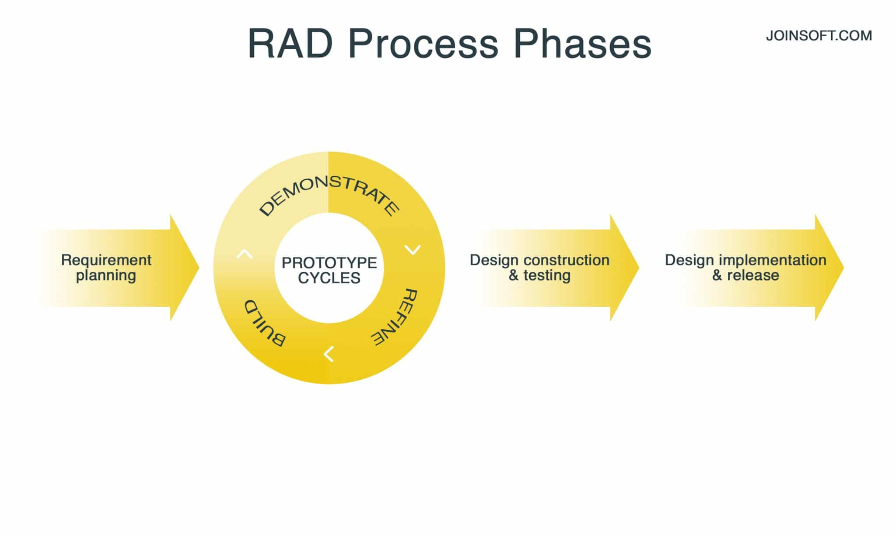

| Modelo |
Aplicacion |
|
| Cascada |
- Los requisitos son conocidos, comprendidos y fijados. No hay requisitos contradictorios.
- En proyectos pequeños y medianos.
|

|
|
Iterativo
|
- Los requisitos básicos del sistema están claramente definidos y comprendidos. Al mismo
tiempo, algunos detalles se pueden mejorar con el tiempo.
- Se requiere un lanzamiento temprano al mercado.
- Hay varias características u objetivos riesgosos.
|
 |
| Espiral |
- Tiene un presupuesto ajustado y la evaluación de riesgos es importante;
- Sin limitación de tiempo;
- Los requisitos son complejos.
- El producto es propenso a sufrir alteraciones importantes durante el proceso de
desarrollo.
|
 |
| V |
- Se requieren pruebas exhaustivas del producto.
- Para proyectos pequeños y medianos donde los requisitos están claramente definidos y
fijados.
- Se encuentran disponibles ingenieros con las calificaciones necesarias, especialmente
probadores.
|
 |
| Big Bang |
- Existe una necesidad urgente del producto.
- Poco o ningún tiempo para la preparación.
- Los requisitos y plazos no están claramente establecidos.
- Su equipo de desarrolladores está formado por 1 o 2 especialistas.
|
 |
| Agiles |
- Las necesidades de los usuarios cambian constantemente en un negocio dinámico.
- Los cambios ágiles se implementan a un costo menor debido a la alta frecuencia de
incremento.
- Poca planificación es suficiente para iniciar un proyecto.
|
 |
| RAD |
- Hay arquitectos altamente calificados y especializados disponibles.
- El presupuesto del proyecto es grande para permitirse el lujo de estos especialistas,
junto con el costo de las herramientas de montaje automatizadas ya preparadas
- Existe un conocimiento seguro del negocio objetivo.
- Es necesario producir urgentemente el sistema en un plazo de 2 a 3 meses.
|
 |